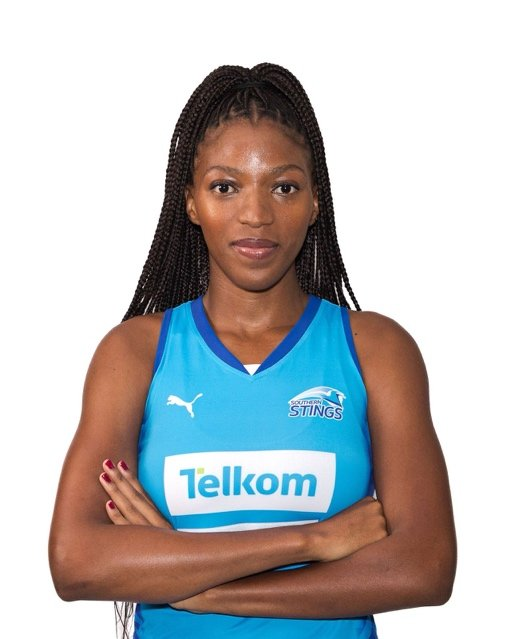

DSL's Entle Futshane, Programme Lead for Netball in a Box, was selected for the 2026 Western Cape Southern Stings squad in the Telkom Netball League. Her campaign ended on a high note in the third and fourth place play-off against the Gauteng Jaguars. The Stings had lost this fixture the year before. This year, they turned it around and won, claiming the bronze medal. Entle was named Player of the Match.
The Stings season ran from April to June 2026, at the same time as DSL's outreach work. The experience she gains on the court feeds directly back into the programme. When Entle teaches young children how to hold a ball, pass and move, she is sharing skills she uses at the highest level herself.

For more information, contact:
Dr. Freda Kemp, Director
Email: fkemp64@gmail.com
Phone: 082 523 0785